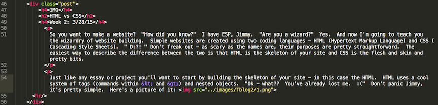

IMG
Git, GitHub, and Version Control
Week 1: 3/20/15
Alright, so here we go. Week 1 has been a whirlwind - lots of stuff to talk about. Since I doubt anyone's going to read this, I'm going to teach this to my imaginary friend(?) Jimmy. Hey Jimmy, how are you doing? "I'm doing pretty well, been kind of a crazy day. I went to Pottery Barn earlier-" Okay - Jimmy? "Yeah?" Let's just stay focused on the coding stuff for now, okay? "Oh yeah - Got it. 10-4. Loud and clear. I can totally do that." Just...okay, I'm just going to start talking now.
What are the benefits of version control? Great question, Jimmy. "Huh?". Version control is a tool that lets you record your project progress at any given point. And it's awesome. Why is it so awesome? Errors and mistakes in your code/methodology are like viruses. Sometimes you don't know that you're sick (or that your project is flawed) until it's irreparable. "Impossible - I've purified my body in the waters of Lake Minnetonka-" Well not everyone's perfect like you, Jimmy. Version control lets you figure out the exact moment that the virus/error entered your system and allows you to continue from that moment as though you were never sick in the first place. Pretty cool huh? Another way to think of it is as a "save station". "Like a video game?!" No Jimmy, not like...well yes. Kind of exactly like that. It lets you save your progress before you make a big decision, explore multiple paths, and decide which path yields the best results. It's like your very own mobile multiverse! Very cool!
"That is cool." Of course it is Jimmy. "But there's no such thing as a real life save station...is there?!" Oh Jimmy. So naiive. For programmers, there is a wonderful tool just like that. It's called Git! How does Git help you keep track of changes? Git has a ton of cool features to help you organize your project. Git is in a constant state of comparing your work to the master branch. In a way, when you work in Git, you're working in an alternate reality. You can do anything you'd like and Git will keep track off everything you do and all of the changes you make. "Hey, just like Sting! It'll be watching you!" Hopefully not in a questionably weird way, Jimmy. Anyway, when you've made all of your changes/additions, Git lets you approve/package them and then commit the changes to the project. It then updates the master branch and voila! You've got a stew going!
"So that's all cool and stuff...but that sounds so lonley! :(! What if I want you, my best friend, to give me your world-renouned feedback on my code? Is there a way for me to show my brilliant creations..." Heh "...to other people?" Jimmy, just when I thought you couldn't get any dumber, you go and say that...and totally redeem yourself! There is a place exactly like that! It's called Github! GitHub adds a whole new awesome layer to the collaboration process. You remember Version Control and Git and keeping track of changes? Well GitHub makes it all accessable virtually! "Whaaaat? You don't have to sit next to each other or physically connect your computers or-" No! Not any more! GitHub is essentially a hosting service that allows you to upload your code to a centralized server. Your master branch can live in the free unbridled pastures of GitHub while you (and many many others!) can access it, change it, comment on it, collaborate through it, do whatever you want to it - virtually! How freakin' awesome is that?! Just imagine how many whiny programmers it shushed up. Hah. Good times.
Anyways, this has been your Week 1 update with Josh! "and Jimmy!". Just- Josh...okay. Hope you guys learned something! I'll probably be back next week, so stay tuned! "What time?" I'll let you know. "So like...friday?" I mean, hopefully. "Any way you can give me like a guestimation or-" NO JIMMY, I DON'T KNOW! "Well jeez, I didn't mean to..." Ha. Oh, Jimmy. This is going to be...fun.
IMG
HTML vs CSS
Week 2: 3/28/15
So you want to make a website? "How did you know?" I have ESP, Jimmy. "Are you a wizard?" Yes. And now I'm going to teach you the wizardry of website building. Simple websites are created using two coding languages - HTML (Hypertext Markup Language) and CSS (Cascading Style Sheets). " D:?! " Don't freak out - as scary as the names are, their purposes are pretty straightforward. The easiest way to describe the difference between the two is that HTML is the skeleton of your site and CSS is the flesh and skin and pretty bits.
Just like any essay or project you'll want to start by building the skeleton of your site - in this case the HTML. HTML uses a cool system of tags (commands within < and >) and nested objects. "Ok - what?? You've already lost me. :(" Don't panic Jimmy, it's pretty simple. Here's a picture of it: . See that? That's our skeleton. So check it out - we start with a <div> tag (think of it as a block with stuff inside it). This div is part of a group of divs called "post" (this will make more sense when we check out CSS in a minute). "What the hell are all those other crazy letters?" That's just regular english Jimmy. "No, the stuff in the <>s!" Those are all tags - each one has a different purpose on your site. The <h> stands for "header" and <p> stands for "paragraph". Pretty simple huh? Every tag also has an ending tag, indicating where that object ends. You see those vertical lines on the left hand side? If you trace the line down, you'll notice that the <div> tag, marking the beginning of our "post" block, has a matching </div> tag below, indicating the end. "Oh ok, so it makes, like, a container?" You got it, Jimmy. Now, you see how everything between those tags is tabbed in towards the right? That is what I meant by nesting - the tabs indicate that the object is INSIDE the above object and can inherent certain properties- "zzzzz" Yeah yeah, too much info. Maybe I'll tell you more about that in another post. Anyways, this tabbing system is awesome. It makes it much easier to visualize the relationship between your various objects and keep track of your website's skeleton! Let's see what it looks like in the browser: . "Are you serious? But that's so booooorrrrriiiinggg." Yeah well we're not done- "I mean look at that! What an ugly mess!" Jimmy, were you not listening? What part of "skeleton" are you not understanding? "Obviously the core concept!" [Insert facepalm]. Ok, well now that we have a skeleton we need to flesh it out. "How are we supposed to do-" CSS. CSS, Jimmy. It's seriously like right up there ^. Get on my level!
Now that we've got our skeleton it's time for the "fun" part. "About time! Why didn't we just start at the fun part?". Would you start painting a house before you've built it? "I don't know, maybe-" No Jimmy, you wouldn't. That'd be impractical. And you'd scratch the paint. And who wants to do the same job multiple times? "I like painting." Jimmy, if you existed I would just...ANYWAYS, CSS is what you use to make your skeleton pretty. "How?" In almost any way you can imagine! You can change your font, font color, font size, make stuff bold, and all sorts of other cool stuff! You can change the arrangement of the "blocks" on the page by centering them, making them float next to each other, or locking them to your screen! Want to see what it looks like? "Duh!" Well check it out: 
 . Lots of stuff going behind the scenes, huh? See how every HTML <span> is given an ID? Well that ID corresponds to a section in the CSS that tells it what to do! "That's..." Yes, Jimmy? "...actually kind of awesome! :O!" Duh! It's also great because by keeping your skeleton and pretty stuff separate it's a lot easier to pinpoint exactly where your problem is when one arises! "But with a system so simple, how many problems can you really have?" Hahaaa, oh Jimmy. Thank you. That was a good laugh. "?" You'll see one day, buddy. You'll see.
. Lots of stuff going behind the scenes, huh? See how every HTML <span> is given an ID? Well that ID corresponds to a section in the CSS that tells it what to do! "That's..." Yes, Jimmy? "...actually kind of awesome! :O!" Duh! It's also great because by keeping your skeleton and pretty stuff separate it's a lot easier to pinpoint exactly where your problem is when one arises! "But with a system so simple, how many problems can you really have?" Hahaaa, oh Jimmy. Thank you. That was a good laugh. "?" You'll see one day, buddy. You'll see.
Anyways, so that's that! You start by creating a skeleton in HTML and then make it the belle of the ball in CSS. "Just like Carrie!" Hopefully not at all Carrie. It'll probably feel a bit like Carrie for a while though, now that I think about it. ":D!" But no matter how hard it gets, nothing is more satisfying than getting your stuff to work! There's a ton of cool resources out there like Codecademy, w3schools, and skillcrush that have tips and tricks and a lot more info, so if you get lost or completely and utterly demoralized, there's probably a solution out there just waiting to be found! Josh and Jimmy signing off.